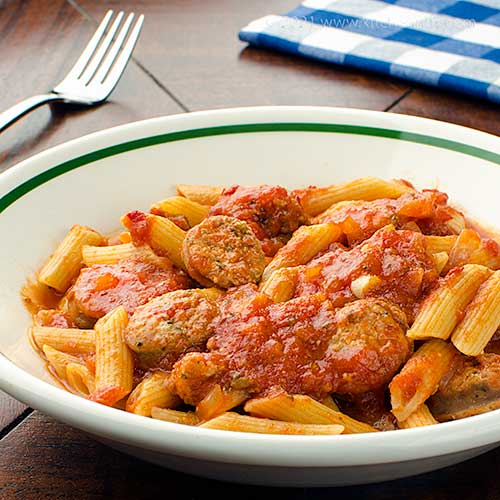

Sausage Marinara Pasta Recipe

Description
Sausage Marinara Pasta is not only a delicious meal to make, it's one that can be made in bulk to feed any large family.
The best part about it is that it can be made as spicy, mild, sweet, or doused in garlic as you wish. I personally prefer to go heavy on garlic, medium spice, and mildy sweet.
However, you're more than welcome to tweek the portions of the seasonings as you see fit. My only recommendation is to go easy on the Bay Leaves, while they add a great subtle flavor to your dish, adding one-too-many will leave your dish tasting bitter.
When in doubt, add no more than one leaf for small sized pots, and no more than two leaves for any pot above medium size
Ingredients
Sausage Marinara Sauce and Pasta
- One dozen sweet italian sausages, a skillet, and a pot
- One box of penne pasta (or pasta of your choice), and a pot
- 2 cans of Tuttorosso tomato sauce
- 3 Tbsp canola, vegetable, coconut, or olive oil
Seasonings
- 2 Tbsp of granulated garlic(add more or less according to taste)
- 1/2 tsp ground black pepper
- 1/2 tsp onion powder
- 1/2 tsp cayenne pepper (add more or less according to taste)
- 1 Tbsp sugar
1/2 tsp ground oregano
- 1 bay leaf
Steps
- Prepare:
- Cut the skin of the sausage, roll the meat into little meat balls, and set them aside to be browned on the skillet (Depending on how you prefer the dish to be served, you may also leave the sausage intact and brown it as is).
- If you're leaving the sausage intact, it's advised that you make at least one slice in the sausage when it's almost finished browning. This will allow the sausage flavors to marinate after being added to the sauce.
- Preheat skillet: Add MED HIGH heat to the skillet and coat it with a thin layer of canola oil
- Brown the sausage: Place the sausage on the heated skillet and allow it to cook until the meat is well-browned.
- Cooking the sauce: Cut open both tomato sauce cans and add them to your pot, as well as your seasonings. Set heat to MEDIUM LOW. You'll want the sauce to cook slow and be stirred semi-frequently to avoid sauce burning and sticking to the walls of the pot.
- Add sausage: When the sauce is beginning to bubble, add the browned sausage to it. Place a lid over the pot to protect against splashes and leave a small space for steam to escape. Set heat to LOW and allow the sauce to simmer. Stir occasionally (once every 30 mins) until sauce has become thickened. It is recommended to taste the sauce when your stir and adjust your seasonings as needed.
- Cook pasta: Add water in a separate pot, bring to a boil, add 1/2 tsp of salt, 1/2 tsp of canola oil, and a box of penne pasta. Stir frequently and serve when your pasta is well done or al-dente (usually after 8 to 10 minutes, depending on your choice of pasta). Once fully cooked, shut off heat, and drain the pasta in a strainer. Cool the pot off with cold water, and add the pasta back to it. Add 1 or 2 Tbsp of canola or olive oil and stir to prevent the pasta from sticking together.
- Combine and serve: Test the sauce once more to ensure it's at the desired taste, shut off heat, and serve over the pasta.